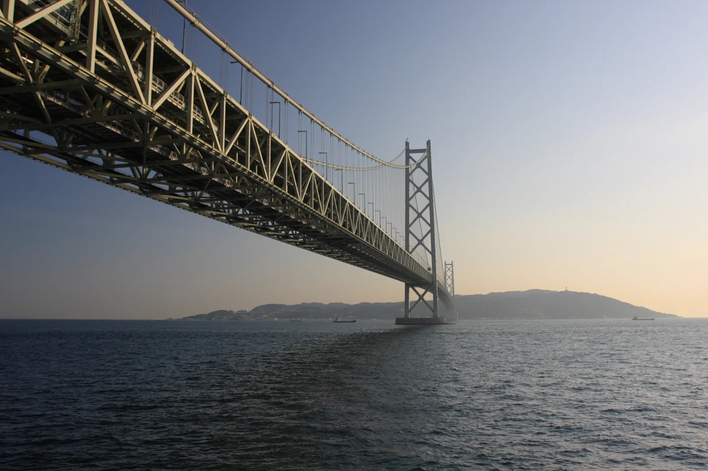

Good company.
Great detours.
Five people. Two nights. A little freedom.
Find your way out of Osaka, with good food,
fresh air, and a few stops worth taking.
Three escapes. One starting point: Namba.

STARTING POINTNamba, Osaka
TIME TO GET AWAY3 days · 2 nights
BETTER TOGETHER5 travelers
ROOM FOR THE WHOLE CREWOne roomy rental
Which way feels like you?
Three ways to spend two nights. Pick one to make it your plan.
Drive times are estimates from Namba to the first destination, before stops. Traffic, tolls, and parking are extra considerations.
A plan, with room to wander.
Good stops make a great trip.
A few places to explore, eat well, and keep moving.
Every stop links to an official source. Details checked ; confirm current hours, fees, and access before your visit. Photos show the named destination or labeled inspiration.
A little planning.
A lot more freedom.
The essentials for a smooth trip with five.
Tick them off together before you go.